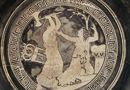

Agamemnon's Return Home
Agamemnon’s return home after the Trojan War and his subsequent downfall at the hands of his wife are famously presented in a trilogy of plays by the Athenian playwright Aeschylus, in the fifth century BC. Furious at her husbands actions, Clytemnestra has plotted with the one remaining son of Thyestes, named Aegisthus, to murder Agamemnon upon his return home. She welcomes Agamemnon kindly at first, but then kills him together with Aegisthus when Agamemnon is in the bath, by throwing a net over him and stabbing him, or in some other versions at a banquet (see image 1). Agamemnon has also angered Clytemnestra by bringing home with him from the war as a concubine the Trojan prophetess Cassandra, whom Clytemnestra also kills (see image 2). The question of culpability and blame is a complicated one in this myth—on the one hand, Clytemnestra acts cruelly in killing her husband, but is her reaction not also understandable given the actions of her husband in killing their daughter? The curse of previous generations is also physically present in the myth, as the son of Thyestes, Aegisthus, helps Clytemnestra to exact revenge on the son of Atreus, Agamemnon. On the other hand, is Agamemnon entirely culpable? The decision to sacrifice his daughter, or face shame in front of the Greeks, was a demand of the goddess Artemis and one must reflect on the role of divine will and the curse on the actions of all characters involved.
{kind=link}
{kind=link}